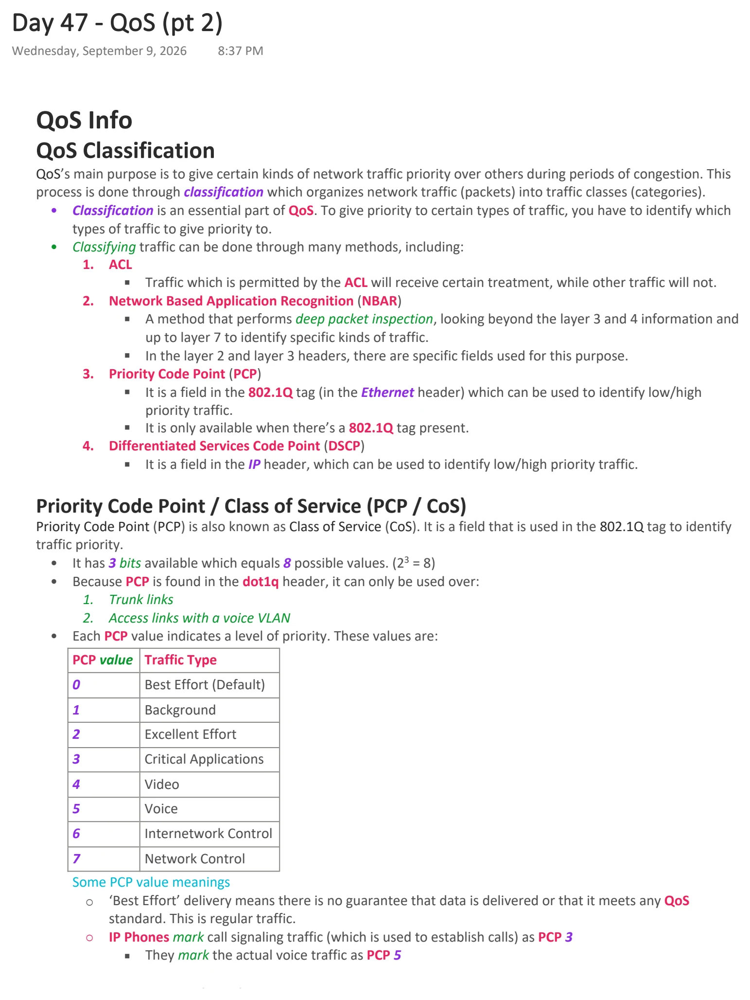
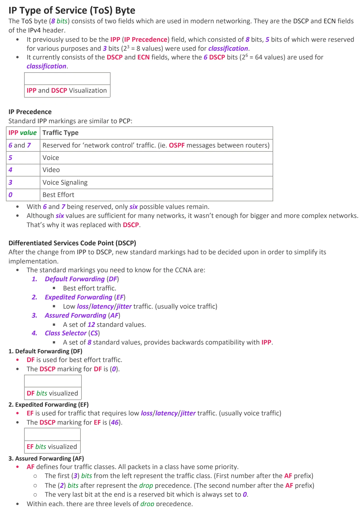
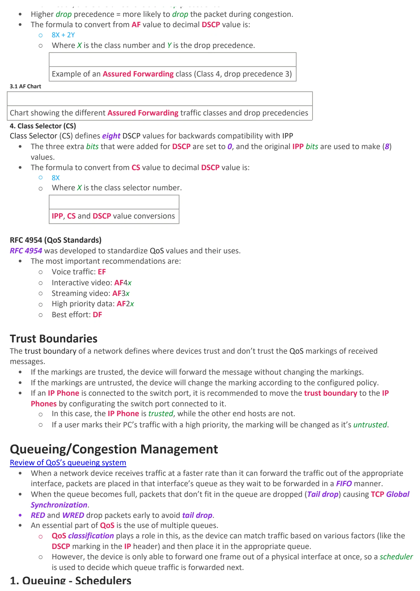
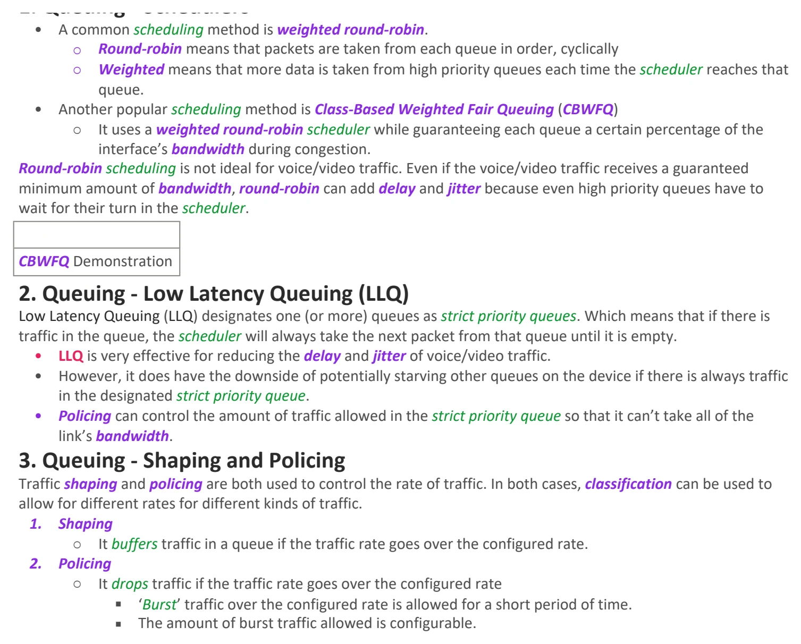

QoS (pt 2)
Download original PDF



Text view — QoS (pt 2)
Extracted from the original export. Diagrams and some formatting appear in the notes above.
Day 47 - QoS (pt 2) Wednesday, September 9, 2026 8:37 PM QoS Info QoS Classification QoS’s main purpose is to give certain kinds of network traffic priority over others during periods of congestion. This process is done through classification which organizes network traffic (packets) into traffic classes (categories). • Classification is an essential part of QoS. To give priority to certain types of traffic, you have to identify which types of traffic to give priority to. • Classifying traffic can be done through many methods, including: 1. ACL § Traffic which is permitted by the ACL will receive certain treatment, while other traffic will not. 2. Network Based Application Recognition (NBAR) § A method that performs deep packet inspection, looking beyond the layer 3 and 4 information and up to layer 7 to identify specific kinds of traffic. § In the layer 2 and layer 3 headers, there are specific fields used for this purpose. 3. Priority Code Point (PCP) § It is a field in the 802.1Q tag (in the Ethernet header) which can be used to identify low/high priority traffic. § It is only available when there’s a 802.1Q tag present. 4. Differentiated Services Code Point (DSCP) § It is a field in the IP header, which can be used to identify low/high priority traffic. Priority Code Point / Class of Service (PCP / CoS) Priority Code Point (PCP) is also known as Class of Service (CoS). It is a field that is used in the 802.1Q tag to identify traffic priority. • It has 3 bits available which equals 8 possible values. (23 = 8) • Because PCP is found in the dot1q header, it can only be used over: 1. Trunk links 2. Access links with a voice VLAN • Each PCP value indicates a level of priority. These values are: PCP value Traffic Type 0 Best Effort (Default) 1 Background 2 Excellent Effort 3 Critical Applications 4 Video 5 Voice 6 Internetwork Control 7 Network Control Some PCP value meanings ○ ‘Best Effort’ delivery means there is no guarantee that data is delivered or that it meets any QoS standard. This is regular traffic. ○ IP Phones mark call signaling traffic (which is used to establish calls) as PCP 3 § They mark the actual voice traffic as PCP 5 IP Type of Service (ToS) Byte The ToS byte (8 bits) consists of two fields which are used in modern networking. They are the DSCP and ECN fields of the IPv4 header. • It previously used to be the IPP (IP Precedence) field, which consisted of 8 bits, 5 bits of which were reserved for various purposes and 3 bits (23 = 8 values) were used for classification. • It currently consists of the DSCP and ECN fields, where the 6 DSCP bits (26 = 64 values) are used for classification. IPP and DSCP Visualization IP Precedence Standard IPP markings are similar to PCP: IPP value Traffic Type 6 and 7 Reserved for ‘network control’ traffic. (ie. OSPF messages between routers) 5 Voice 4 Video 3 Voice Signaling 0 Best Effort • With 6 and 7 being reserved, only six possible values remain. • Although six values are sufficient for many networks, it wasn’t enough for bigger and more complex networks. That’s why it was replaced with DSCP. Differentiated Services Code Point (DSCP) After the change from IPP to DSCP, new standard markings had to be decided upon in order to simplify its implementation. • The standard markings you need to know for the CCNA are: 1. Default Forwarding (DF) § Best effort traffic. 2. Expedited Forwarding (EF) § Low loss/latency/jitter traffic. (usually voice traffic) 3. Assured Forwarding (AF) § A set of 12 standard values. 4. Class Selector (CS) § A set of 8 standard values, provides backwards compatibility with IPP. 1. Default Forwarding (DF) • DF is used for best effort traffic. • The DSCP marking for DF is (0). DF bits visualized 2. Expedited Forwarding (EF) • EF is used for traffic that requires low loss/latency/jitter traffic. (usually voice traffic) • The DSCP marking for EF is (46). EF bits visualized 3. Assured Forwarding (AF) • AF defines four traffic classes. All packets in a class have some priority. ○ The first (3) bits from the left represent the traffic class. (First number after the AF prefix) ○ The (2) bits after represent the drop precedence. (The second number after the AF prefix) ○ The very last bit at the end is a reserved bit which is always set to 0. • Within each, there are three levels of drop precedence. • Higher drop precedence = more likely to drop the packet during congestion. • The formula to convert from AF value to decimal DSCP value is: ○ 8X + 2Y ○ Where X is the class number and Y is the drop precedence. Example of an Assured Forwarding class (Class 4, drop precedence 3) 3.1 AF Chart Chart showing the different Assured Forwarding traffic classes and drop precedencies 4. Class Selector (CS) Class Selector (CS) defines eight DSCP values for backwards compatibility with IPP • The three extra bits that were added for DSCP are set to 0, and the original IPP bits are used to make (8) values. • The formula to convert from CS value to decimal DSCP value is: ○ 8X ○ Where X is the class selector number. IPP, CS and DSCP value conversions RFC 4954 (QoS Standards) RFC 4954 was developed to standardize QoS values and their uses. • The most important recommendations are: ○ Voice traffic: EF ○ Interactive video: AF4x ○ Streaming video: AF3x ○ High priority data: AF2x ○ Best effort: DF Trust Boundaries The trust boundary of a network defines where devices trust and don’t trust the QoS markings of received messages. • If the markings are trusted, the device will forward the message without changing the markings. • If the markings are untrusted, the device will change the marking according to the configured policy. • If an IP Phone is connected to the switch port, it is recommended to move the trust boundary to the IP Phones by configurating the switch port connected to it. ○ In this case, the IP Phone is trusted, while the other end hosts are not. ○ If a user marks their PC’s traffic with a high priority, the marking will be changed as it’s untrusted. Queueing/Congestion Management Review of QoS’s queueing system • When a network device receives traffic at a faster rate than it can forward the traffic out of the appropriate interface, packets are placed in that interface’s queue as they wait to be forwarded in a FIFO manner. • When the queue becomes full, packets that don’t fit in the queue are dropped (Tail drop) causing TCP Global Synchronization. • RED and WRED drop packets early to avoid tail drop. • An essential part of QoS is the use of multiple queues. ○ QoS classification plays a role in this, as the device can match traffic based on various factors (like the DSCP marking in the IP header) and then place it in the appropriate queue. ○ However, the device is only able to forward one frame out of a physical interface at once, so a scheduler is used to decide which queue traffic is forwarded next. 1. Queuing - Schedulers • A common scheduling method is weighted round-robin. ○ Round-robin means that packets are taken from each queue in order, cyclically ○ Weighted means that more data is taken from high priority queues each time the scheduler reaches that queue. • Another popular scheduling method is Class-Based Weighted Fair Queuing (CBWFQ) ○ It uses a weighted round-robin scheduler while guaranteeing each queue a certain percentage of the interface’s bandwidth during congestion. Round-robin scheduling is not ideal for voice/video traffic. Even if the voice/video traffic receives a guaranteed minimum amount of bandwidth, round-robin can add delay and jitter because even high priority queues have to wait for their turn in the scheduler. CBWFQ Demonstration 2. Queuing - Low Latency Queuing (LLQ) Low Latency Queuing (LLQ) designates one (or more) queues as strict priority queues. Which means that if there is traffic in the queue, the scheduler will always take the next packet from that queue until it is empty. • LLQ is very effective for reducing the delay and jitter of voice/video traffic. • However, it does have the downside of potentially starving other queues on the device if there is always traffic in the designated strict priority queue. • Policing can control the amount of traffic allowed in the strict priority queue so that it can’t take all of the link’s bandwidth. 3. Queuing - Shaping and Policing Traffic shaping and policing are both used to control the rate of traffic. In both cases, classification can be used to allow for different rates for different kinds of traffic. 1. Shaping ○ It buffers traffic in a queue if the traffic rate goes over the configured rate. 2. Policing ○ It drops traffic if the traffic rate goes over the configured rate § ‘Burst’ traffic over the configured rate is allowed for a short period of time. § The amount of burst traffic allowed is configurable. Day 47 - QoS (pt 2) Wednesday, September 9, 2026 8:37 PM QoS Info QoS Classification QoS’s main purpose is to give certain kinds of network traffic priority over others during periods of congestion. This process is done through classification which organizes network traffic (packets) into traffic classes (categories). • Classification is an essential part of QoS. To give priority to certain types of traffic, you have to identify which types of traffic to give priority to. • Classifying traffic can be done through many methods, including: 1. ACL § Traffic which is permitted by the ACL will receive certain treatment, while other traffic will not. 2. Network Based Application Recognition (NBAR) § A method that performs deep packet inspection, looking beyond the layer 3 and 4 information and up to layer 7 to identify specific kinds of traffic. § In the layer 2 and layer 3 headers, there are specific fields used for this purpose. 3. Priority Code Point (PCP) § It is a field in the 802.1Q tag (in the Ethernet header) which can be used to identify low/high priority traffic. § It is only available when there’s a 802.1Q tag present. 4. Differentiated Services Code Point (DSCP) § It is a field in the IP header, which can be used to identify low/high priority traffic. Priority Code Point / Class of Service (PCP / CoS) Priority Code Point (PCP) is also known as Class of Service (CoS). It is a field that is used in the 802.1Q tag to identify traffic priority. • It has 3 bits available which equals 8 possible values. (23 = 8) • Because PCP is found in the dot1q header, it can only be used over: 1. Trunk links 2. Access links with a voice VLAN • Each PCP value indicates a level of priority. These values are: PCP value Traffic Type 0 Best Effort (Default) 1 Background 2 Excellent Effort 3 Critical Applications 4 Video 5 Voice 6 Internetwork Control 7 Network Control Some PCP value meanings ○ ‘Best Effort’ delivery means there is no guarantee that data is delivered or that it meets any QoS standard. This is regular traffic. ○ IP Phones mark call signaling traffic (which is used to establish calls) as PCP 3 § They mark the actual voice traffic as PCP 5 IP Type of Service (ToS) Byte The ToS byte (8 bits) consists of two fields which are used in modern networking. They are the DSCP and ECN fields of the IPv4 header. • It previously used to be the IPP (IP Precedence) field, which consisted of 8 bits, 5 bits of which were reserved for various purposes and 3 bits (23 = 8 values) were used for classification. • It currently consists of the DSCP and ECN fields, where the 6 DSCP bits (26 = 64 values) are used for classification. IPP and DSCP Visualization IP Precedence Standard IPP markings are similar to PCP: IPP value Traffic Type 6 and 7 Reserved for ‘network control’ traffic. (ie. OSPF messages between routers) 5 Voice 4 Video 3 Voice Signaling 0 Best Effort • With 6 and 7 being reserved, only six possible values remain. • Although six values are sufficient for many networks, it wasn’t enough for bigger and more complex networks. That’s why it was replaced with DSCP. Differentiated Services Code Point (DSCP) After the change from IPP to DSCP, new standard markings had to be decided upon in order to simplify its implementation. • The standard markings you need to know for the CCNA are: 1. Default Forwarding (DF) § Best effort traffic. 2. Expedited Forwarding (EF) § Low loss/latency/jitter traffic. (usually voice traffic) 3. Assured Forwarding (AF) § A set of 12 standard values. 4. Class Selector (CS) § A set of 8 standard values, provides backwards compatibility with IPP. 1. Default Forwarding (DF) • DF is used for best effort traffic. • The DSCP marking for DF is (0). DF bits visualized 2. Expedited Forwarding (EF) • EF is used for traffic that requires low loss/latency/jitter traffic. (usually voice traffic) • The DSCP marking for EF is (46). EF bits visualized 3. Assured Forwarding (AF) • AF defines four traffic classes. All packets in a class have some priority. ○ The first (3) bits from the left represent the traffic class. (First number after the AF prefix) ○ The (2) bits after represent the drop precedence. (The second number after the AF prefix) ○ The very last bit at the end is a reserved bit which is always set to 0. • Within each, there are three levels of drop precedence. • Higher drop precedence = more likely to drop the packet during congestion. • The formula to convert from AF value to decimal DSCP value is: ○ 8X + 2Y ○ Where X is the class number and Y is the drop precedence. Example of an Assured Forwarding class (Class 4, drop precedence 3) 3.1 AF Chart Chart showing the different Assured Forwarding traffic classes and drop precedencies 4. Class Selector (CS) Class Selector (CS) defines eight DSCP values for backwards compatibility with IPP • The three extra bits that were added for DSCP are set to 0, and the original IPP bits are used to make (8) values. • The formula to convert from CS value to decimal DSCP value is: ○ 8X ○ Where X is the class selector number. IPP, CS and DSCP value conversions RFC 4954 (QoS Standards) RFC 4954 was developed to standardize QoS values and their uses. • The most important recommendations are: ○ Voice traffic: EF ○ Interactive video: AF4x ○ Streaming video: AF3x ○ High priority data: AF2x ○ Best effort: DF Trust Boundaries The trust boundary of a network defines where devices trust and don’t trust the QoS markings of received messages. • If the markings are trusted, the device will forward the message without changing the markings. • If the markings are untrusted, the device will change the marking according to the configured policy. • If an IP Phone is connected to the switch port, it is recommended to move the trust boundary to the IP Phones by configurating the switch port connected to it. ○ In this case, the IP Phone is trusted, while the other end hosts are not. ○ If a user marks their PC’s traffic with a high priority, the marking will be changed as it’s untrusted. Queueing/Congestion Management Review of QoS’s queueing system • When a network device receives traffic at a faster rate than it can forward the traffic out of the appropriate interface, packets are placed in that interface’s queue as they wait to be forwarded in a FIFO manner. • When the queue becomes full, packets that don’t fit in the queue are dropped (Tail drop) causing TCP Global Synchronization. • RED and WRED drop packets early to avoid tail drop. • An essential part of QoS is the use of multiple queues. ○ QoS classification plays a role in this, as the device can match traffic based on various factors (like the DSCP marking in the IP header) and then place it in the appropriate queue. ○ However, the device is only able to forward one frame out of a physical interface at once, so a scheduler is used to decide which queue traffic is forwarded next. 1. Queuing - Schedulers • A common scheduling method is weighted round-robin. ○ Round-robin means that packets are taken from each queue in order, cyclically ○ Weighted means that more data is taken from high priority queues each time the scheduler reaches that queue. • Another popular scheduling method is Class-Based Weighted Fair Queuing (CBWFQ) ○ It uses a weighted round-robin scheduler while guaranteeing each queue a certain percentage of the interface’s bandwidth during congestion. Round-robin scheduling is not ideal for voice/video traffic. Even if the voice/video traffic receives a guaranteed minimum amount of bandwidth, round-robin can add delay and jitter because even high priority queues have to wait for their turn in the scheduler. CBWFQ Demonstration 2. Queuing - Low Latency Queuing (LLQ) Low Latency Queuing (LLQ) designates one (or more) queues as strict priority queues. Which means that if there is traffic in the queue, the scheduler will always take the next packet from that queue until it is empty. • LLQ is very effective for reducing the delay and jitter of voice/video traffic. • However, it does have the downside of potentially starving other queues on the device if there is always traffic in the designated strict priority queue. • Policing can control the amount of traffic allowed in the strict priority queue so that it can’t take all of the link’s bandwidth. 3. Queuing - Shaping and Policing Traffic shaping and policing are both used to control the rate of traffic. In both cases, classification can be used to allow for different rates for different kinds of traffic. 1. Shaping ○ It buffers traffic in a queue if the traffic rate goes over the configured rate. 2. Policing ○ It drops traffic if the traffic rate goes over the configured rate § ‘Burst’ traffic over the configured rate is allowed for a short period of time. § The amount of burst traffic allowed is configurable. Day 47 - QoS (pt 2) Wednesday, September 9, 2026 8:37 PM QoS Info QoS Classification QoS’s main purpose is to give certain kinds of network traffic priority over others during periods of congestion. This process is done through classification which organizes network traffic (packets) into traffic classes (categories). • Classification is an essential part of QoS. To give priority to certain types of traffic, you have to identify which types of traffic to give priority to. • Classifying traffic can be done through many methods, including: 1. ACL § Traffic which is permitted by the ACL will receive certain treatment, while other traffic will not. 2. Network Based Application Recognition (NBAR) § A method that performs deep packet inspection, looking beyond the layer 3 and 4 information and up to layer 7 to identify specific kinds of traffic. § In the layer 2 and layer 3 headers, there are specific fields used for this purpose. 3. Priority Code Point (PCP) § It is a field in the 802.1Q tag (in the Ethernet header) which can be used to identify low/high priority traffic. § It is only available when there’s a 802.1Q tag present. 4. Differentiated Services Code Point (DSCP) § It is a field in the IP header, which can be used to identify low/high priority traffic. Priority Code Point / Class of Service (PCP / CoS) Priority Code Point (PCP) is also known as Class of Service (CoS). It is a field that is used in the 802.1Q tag to identify traffic priority. • It has 3 bits available which equals 8 possible values. (23 = 8) • Because PCP is found in the dot1q header, it can only be used over: 1. Trunk links 2. Access links with a voice VLAN • Each PCP value indicates a level of priority. These values are: PCP value Traffic Type 0 Best Effort (Default) 1 Background 2 Excellent Effort 3 Critical Applications 4 Video 5 Voice 6 Internetwork Control 7 Network Control Some PCP value meanings ○ ‘Best Effort’ delivery means there is no guarantee that data is delivered or that it meets any QoS standard. This is regular traffic. ○ IP Phones mark call signaling traffic (which is used to establish calls) as PCP 3 § They mark the actual voice traffic as PCP 5 IP Type of Service (ToS) Byte The ToS byte (8 bits) consists of two fields which are used in modern networking. They are the DSCP and ECN fields of the IPv4 header. • It previously used to be the IPP (IP Precedence) field, which consisted of 8 bits, 5 bits of which were reserved for various purposes and 3 bits (23 = 8 values) were used for classification. • It currently consists of the DSCP and ECN fields, where the 6 DSCP bits (26 = 64 values) are used for classification. IPP and DSCP Visualization IP Precedence Standard IPP markings are similar to PCP: IPP value Traffic Type 6 and 7 Reserved for ‘network control’ traffic. (ie. OSPF messages between routers) 5 Voice 4 Video 3 Voice Signaling 0 Best Effort • With 6 and 7 being reserved, only six possible values remain. • Although six values are sufficient for many networks, it wasn’t enough for bigger and more complex networks. That’s why it was replaced with DSCP. Differentiated Services Code Point (DSCP) After the change from IPP to DSCP, new standard markings had to be decided upon in order to simplify its implementation. • The standard markings you need to know for the CCNA are: 1. Default Forwarding (DF) § Best effort traffic. 2. Expedited Forwarding (EF) § Low loss/latency/jitter traffic. (usually voice traffic) 3. Assured Forwarding (AF) § A set of 12 standard values. 4. Class Selector (CS) § A set of 8 standard values, provides backwards compatibility with IPP. 1. Default Forwarding (DF) • DF is used for best effort traffic. • The DSCP marking for DF is (0). DF bits visualized 2. Expedited Forwarding (EF) • EF is used for traffic that requires low loss/latency/jitter traffic. (usually voice traffic) • The DSCP marking for EF is (46). EF bits visualized 3. Assured Forwarding (AF) • AF defines four traffic classes. All packets in a class have some priority. ○ The first (3) bits from the left represent the traffic class. (First number after the AF prefix) ○ The (2) bits after represent the drop precedence. (The second number after the AF prefix) ○ The very last bit at the end is a reserved bit which is always set to 0. • Within each, there are three levels of drop precedence. • Higher drop precedence = more likely to drop the packet during congestion. • The formula to convert from AF value to decimal DSCP value is: ○ 8X + 2Y ○ Where X is the class number and Y is the drop precedence. Example of an Assured Forwarding class (Class 4, drop precedence 3) 3.1 AF Chart Chart showing the different Assured Forwarding traffic classes and drop precedencies 4. Class Selector (CS) Class Selector (CS) defines eight DSCP values for backwards compatibility with IPP • The three extra bits that were added for DSCP are set to 0, and the original IPP bits are used to make (8) values. • The formula to convert from CS value to decimal DSCP value is: ○ 8X ○ Where X is the class selector number. IPP, CS and DSCP value conversions RFC 4954 (QoS Standards) RFC 4954 was developed to standardize QoS values and their uses. • The most important recommendations are: ○ Voice traffic: EF ○ Interactive video: AF4x ○ Streaming video: AF3x ○ High priority data: AF2x ○ Best effort: DF Trust Boundaries The trust boundary of a network defines where devices trust and don’t trust the QoS markings of received messages. • If the markings are trusted, the device will forward the message without changing the markings. • If the markings are untrusted, the device will change the marking according to the configured policy. • If an IP Phone is connected to the switch port, it is recommended to move the trust boundary to the IP Phones by configurating the switch port connected to it. ○ In this case, the IP Phone is trusted, while the other end hosts are not. ○ If a user marks their PC’s traffic with a high priority, the marking will be changed as it’s untrusted. Queueing/Congestion Management Review of QoS’s queueing system • When a network device receives traffic at a faster rate than it can forward the traffic out of the appropriate interface, packets are placed in that interface’s queue as they wait to be forwarded in a FIFO manner. • When the queue becomes full, packets that don’t fit in the queue are dropped (Tail drop) causing TCP Global Synchronization. • RED and WRED drop packets early to avoid tail drop. • An essential part of QoS is the use of multiple queues. ○ QoS classification plays a role in this, as the device can match traffic based on various factors (like the DSCP marking in the IP header) and then place it in the appropriate queue. ○ However, the device is only able to forward one frame out of a physical interface at once, so a scheduler is used to decide which queue traffic is forwarded next. 1. Queuing - Schedulers • A common scheduling method is weighted round-robin. ○ Round-robin means that packets are taken from each queue in order, cyclically ○ Weighted means that more data is taken from high priority queues each time the scheduler reaches that queue. • Another popular scheduling method is Class-Based Weighted Fair Queuing (CBWFQ) ○ It uses a weighted round-robin scheduler while guaranteeing each queue a certain percentage of the interface’s bandwidth during congestion. Round-robin scheduling is not ideal for voice/video traffic. Even if the voice/video traffic receives a guaranteed minimum amount of bandwidth, round-robin can add delay and jitter because even high priority queues have to wait for their turn in the scheduler. CBWFQ Demonstration 2. Queuing - Low Latency Queuing (LLQ) Low Latency Queuing (LLQ) designates one (or more) queues as strict priority queues. Which means that if there is traffic in the queue, the scheduler will always take the next packet from that queue until it is empty. • LLQ is very effective for reducing the delay and jitter of voice/video traffic. • However, it does have the downside of potentially starving other queues on the device if there is always traffic in the designated strict priority queue. • Policing can control the amount of traffic allowed in the strict priority queue so that it can’t take all of the link’s bandwidth. 3. Queuing - Shaping and Policing Traffic shaping and policing are both used to control the rate of traffic. In both cases, classification can be used to allow for different rates for different kinds of traffic. 1. Shaping ○ It buffers traffic in a queue if the traffic rate goes over the configured rate. 2. Policing ○ It drops traffic if the traffic rate goes over the configured rate § ‘Burst’ traffic over the configured rate is allowed for a short period of time. § The amount of burst traffic allowed is configurable. Day 47 - QoS (pt 2) Wednesday, September 9, 2026 8:37 PM QoS Info QoS Classification QoS’s main purpose is to give certain kinds of network traffic priority over others during periods of congestion. This process is done through classification which organizes network traffic (packets) into traffic classes (categories). • Classification is an essential part of QoS. To give priority to certain types of traffic, you have to identify which types of traffic to give priority to. • Classifying traffic can be done through many methods, including: 1. ACL § Traffic which is permitted by the ACL will receive certain treatment, while other traffic will not. 2. Network Based Application Recognition (NBAR) § A method that performs deep packet inspection, looking beyond the layer 3 and 4 information and up to layer 7 to identify specific kinds of traffic. § In the layer 2 and layer 3 headers, there are specific fields used for this purpose. 3. Priority Code Point (PCP) § It is a field in the 802.1Q tag (in the Ethernet header) which can be used to identify low/high priority traffic. § It is only available when there’s a 802.1Q tag present. 4. Differentiated Services Code Point (DSCP) § It is a field in the IP header, which can be used to identify low/high priority traffic. Priority Code Point / Class of Service (PCP / CoS) Priority Code Point (PCP) is also known as Class of Service (CoS). It is a field that is used in the 802.1Q tag to identify traffic priority. • It has 3 bits available which equals 8 possible values. (23 = 8) • Because PCP is found in the dot1q header, it can only be used over: 1. Trunk links 2. Access links with a voice VLAN • Each PCP value indicates a level of priority. These values are: PCP value Traffic Type 0 Best Effort (Default) 1 Background 2 Excellent Effort 3 Critical Applications 4 Video 5 Voice 6 Internetwork Control 7 Network Control Some PCP value meanings ○ ‘Best Effort’ delivery means there is no guarantee that data is delivered or that it meets any QoS standard. This is regular traffic. ○ IP Phones mark call signaling traffic (which is used to establish calls) as PCP 3 § They mark the actual voice traffic as PCP 5 IP Type of Service (ToS) Byte The ToS byte (8 bits) consists of two fields which are used in modern networking. They are the DSCP and ECN fields of the IPv4 header. • It previously used to be the IPP (IP Precedence) field, which consisted of 8 bits, 5 bits of which were reserved for various purposes and 3 bits (23 = 8 values) were used for classification. • It currently consists of the DSCP and ECN fields, where the 6 DSCP bits (26 = 64 values) are used for classification. IPP and DSCP Visualization IP Precedence Standard IPP markings are similar to PCP: IPP value Traffic Type 6 and 7 Reserved for ‘network control’ traffic. (ie. OSPF messages between routers) 5 Voice 4 Video 3 Voice Signaling 0 Best Effort • With 6 and 7 being reserved, only six possible values remain. • Although six values are sufficient for many networks, it wasn’t enough for bigger and more complex networks. That’s why it was replaced with DSCP. Differentiated Services Code Point (DSCP) After the change from IPP to DSCP, new standard markings had to be decided upon in order to simplify its implementation. • The standard markings you need to know for the CCNA are: 1. Default Forwarding (DF) § Best effort traffic. 2. Expedited Forwarding (EF) § Low loss/latency/jitter traffic. (usually voice traffic) 3. Assured Forwarding (AF) § A set of 12 standard values. 4. Class Selector (CS) § A set of 8 standard values, provides backwards compatibility with IPP. 1. Default Forwarding (DF) • DF is used for best effort traffic. • The DSCP marking for DF is (0). DF bits visualized 2. Expedited Forwarding (EF) • EF is used for traffic that requires low loss/latency/jitter traffic. (usually voice traffic) • The DSCP marking for EF is (46). EF bits visualized 3. Assured Forwarding (AF) • AF defines four traffic classes. All packets in a class have some priority. ○ The first (3) bits from the left represent the traffic class. (First number after the AF prefix) ○ The (2) bits after represent the drop precedence. (The second number after the AF prefix) ○ The very last bit at the end is a reserved bit which is always set to 0. • Within each, there are three levels of drop precedence. • Higher drop precedence = more likely to drop the packet during congestion. • The formula to convert from AF value to decimal DSCP value is: ○ 8X + 2Y ○ Where X is the class number and Y is the drop precedence. Example of an Assured Forwarding class (Class 4, drop precedence 3) 3.1 AF Chart Chart showing the different Assured Forwarding traffic classes and drop precedencies 4. Class Selector (CS) Class Selector (CS) defines eight DSCP values for backwards compatibility with IPP • The three extra bits that were added for DSCP are set to 0, and the original IPP bits are used to make (8) values. • The formula to convert from CS value to decimal DSCP value is: ○ 8X ○ Where X is the class selector number. IPP, CS and DSCP value conversions RFC 4954 (QoS Standards) RFC 4954 was developed to standardize QoS values and their uses. • The most important recommendations are: ○ Voice traffic: EF ○ Interactive video: AF4x ○ Streaming video: AF3x ○ High priority data: AF2x ○ Best effort: DF Trust Boundaries The trust boundary of a network defines where devices trust and don’t trust the QoS markings of received messages. • If the markings are trusted, the device will forward the message without changing the markings. • If the markings are untrusted, the device will change the marking according to the configured policy. • If an IP Phone is connected to the switch port, it is recommended to move the trust boundary to the IP Phones by configurating the switch port connected to it. ○ In this case, the IP Phone is trusted, while the other end hosts are not. ○ If a user marks their PC’s traffic with a high priority, the marking will be changed as it’s untrusted. Queueing/Congestion Management Review of QoS’s queueing system • When a network device receives traffic at a faster rate than it can forward the traffic out of the appropriate interface, packets are placed in that interface’s queue as they wait to be forwarded in a FIFO manner. • When the queue becomes full, packets that don’t fit in the queue are dropped (Tail drop) causing TCP Global Synchronization. • RED and WRED drop packets early to avoid tail drop. • An essential part of QoS is the use of multiple queues. ○ QoS classification plays a role in this, as the device can match traffic based on various factors (like the DSCP marking in the IP header) and then place it in the appropriate queue. ○ However, the device is only able to forward one frame out of a physical interface at once, so a scheduler is used to decide which queue traffic is forwarded next. 1. Queuing - Schedulers • A common scheduling method is weighted round-robin. ○ Round-robin means that packets are taken from each queue in order, cyclically ○ Weighted means that more data is taken from high priority queues each time the scheduler reaches that queue. • Another popular scheduling method is Class-Based Weighted Fair Queuing (CBWFQ) ○ It uses a weighted round-robin scheduler while guaranteeing each queue a certain percentage of the interface’s bandwidth during congestion. Round-robin scheduling is not ideal for voice/video traffic. Even if the voice/video traffic receives a guaranteed minimum amount of bandwidth, round-robin can add delay and jitter because even high priority queues have to wait for their turn in the scheduler. CBWFQ Demonstration 2. Queuing - Low Latency Queuing (LLQ) Low Latency Queuing (LLQ) designates one (or more) queues as strict priority queues. Which means that if there is traffic in the queue, the scheduler will always take the next packet from that queue until it is empty. • LLQ is very effective for reducing the delay and jitter of voice/video traffic. • However, it does have the downside of potentially starving other queues on the device if there is always traffic in the designated strict priority queue. • Policing can control the amount of traffic allowed in the strict priority queue so that it can’t take all of the link’s bandwidth. 3. Queuing - Shaping and Policing Traffic shaping and policing are both used to control the rate of traffic. In both cases, classification can be used to allow for different rates for different kinds of traffic. 1. Shaping ○ It buffers traffic in a queue if the traffic rate goes over the configured rate. 2. Policing ○ It drops traffic if the traffic rate goes over the configured rate § ‘Burst’ traffic over the configured rate is allowed for a short period of time. § The amount of burst traffic allowed is configurable.